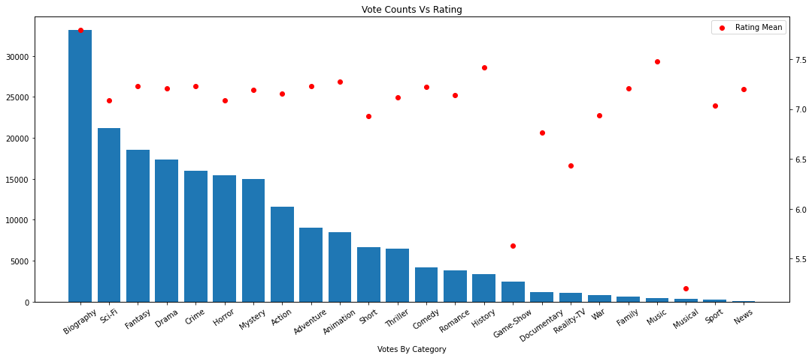

I found some data online which is of some interest about movies and TV shows. And, no, this is not he IMBD data set which floats around for people’s use but is instead from someone on Kaggle which scraped lots of different websites for Thriller, Crime and Action shows. The dataset is small enough to be used with Pandas but large enough to be used to practice some Apache Spark! So, let’s get to it.
Pandas for Exploration
Exploring a bit of the data for problems is what I’d normally do. With Pandas, we can limit the number of rows imported to check for obvious problems before we start expanding our analysis to the whole dataset. This might seem odd considering that pandas can definitely import all this data but this is practice for larger datasets. There will be data which is simply too much for pandas but is not for Apache Spark. And, this is when using Spark will be useful but we also want the data to be as clean as possible before starting to work with it in spark. The last thing I want to do is have to try to clean the data in Spark on the fly or have to re-import data over and over for easily preventable problems.
First thing of note is that there is this weird Unnamed: 0 Column in the data. I also see that there are quite a few columns coming in as String objects when they definitely should be coming in as Intergers: such as the Year or Ratings or Votes. At least Ratings did come in correctly as a Float object for aggregation. Let’s check the actual values.
data.head()
Unnamed: 0
Name
Year
Tv Certificate
Duration per episode
Genre
Ratings
Actor/Actress
Votes
0
0
Andor
2022–
TV-14
40 min
Action, Adventure, Drama
8.4
Diego Luna, Kyle Soller, Stellan Skarsgård, G...
82,474
1
1
The Peripheral
2022–
TV-MA
NaN
Drama, Mystery, Sci-Fi
8.0
Chloë Grace Moretz, Gary Carr, Jack Reynor, J...
34,768
2
2
The Walking Dead
2010–2022
TV-MA
44 min
Drama, Horror, Thriller
8.1
Andrew Lincoln, Norman Reedus, Melissa McBrid...
988,666
3
3
Criminal Minds
2005–
TV-14
42 min
Crime, Drama, Mystery
8.1
Kirsten Vangsness, Matthew Gray Gubler, A.J. ...
198,262
4
4
Breaking Bad
2008–2013
TV-MA
49 min
Crime, Drama, Thriller
9.5
Bryan Cranston, Aaron Paul, Anna Gunn, Betsy ...
1,872,005
So, the Unnamed column is some sort of index column. We wont need that for anything so we’ll definitely be dropping that. The Year column is actually the Years the show was running as oppposed to the year it was released. The votes failed to import as numbers because they have a comma in them; this is common with web scraping and we can simply remove it and convert it to a number. We also have a missing value for the Duration per Episode column. And, lastly, I dislike these column names and we’ll need to fix so that they’re something more usable.
Better. Now, I would like to now if a series is ongoing or not since this might be meaningful information. Looking at the format of the Year column, we can check if the last character is a - and that should tell us if the movie is ongoing or not. Of course, when you try this is does not work because the Year has extra space around it:
Looking at the columns above, that’s not correct so what is going on? Turns out that the character at the end is in fact not a hypen but something else that looks like a hyphen. Or, it might be some form of encoding mismatch becuase it’s not the same thing:
data.Year.iloc[1].strip()[-1] =='-'
False
Rather than figure out what exactly it is, we’re just going to copy it.
The starting year would actually be useful to know about since there are disagreements about which years of movies have the best shows. Pulling that out is going to be really simple. We’ll just strip the extra white space, split on our weird hyphen and then pull the first value:
This is surprisignly common in R but not very much in Python for some reason. When I was initially trying to work on these sorts of problems, I found that explode() was not something which was supported with Python. It did exists in Apache Spark - which is where I found the actual name for this action - so I had to work on writing my own. Thankfully, I don’t have to keep track of my worse version and use the official call now.
To explode a column means to duplicate rows by splitting up the values in a column. If we look at the documentation for this:
For our data, we’ll want to do this for the Genre and the Actor columns. You will notice that to do this we’ll need the column to contain a list instead of the comma separated values we have now. A quick assign and apply will fix this for us.
# TIME TO EXPLODE# I am so happy this is a thing.data = data.assign( Genre = data.Genres.apply(lambda x: x.split(',')), Actor = data.Actors.apply(lambda x: x.split(',')))data = data.explode('Genre')data = data.explode('Actor')data = data.assign( Genre = data.Genre.apply(lambda x: x.strip()), Actor = data.Actor.apply(lambda x: x.strip()))
data.head(15)[['Name', 'Year', 'Genre', 'Actor']]
Name
Year
Genre
Actor
0
Andor
2022–
Action
Diego Luna
0
Andor
2022–
Action
Kyle Soller
0
Andor
2022–
Action
Stellan Skarsgård
0
Andor
2022–
Action
Genevieve O'Reilly
0
Andor
2022–
Adventure
Diego Luna
0
Andor
2022–
Adventure
Kyle Soller
0
Andor
2022–
Adventure
Stellan Skarsgård
0
Andor
2022–
Adventure
Genevieve O'Reilly
0
Andor
2022–
Drama
Diego Luna
0
Andor
2022–
Drama
Kyle Soller
0
Andor
2022–
Drama
Stellan Skarsgård
0
Andor
2022–
Drama
Genevieve O'Reilly
1
The Peripheral
2022–
Drama
Chloë Grace Moretz
1
The Peripheral
2022–
Drama
Gary Carr
1
The Peripheral
2022–
Drama
Jack Reynor
Nice! Now we can compare actors and genres!
Data Cleaning
It is here we’ll need to step aside since there were problems which this data. I believe I found this while exploring some basic questions but in effect, there are parenthesis included in the Year column:
Now, we could read each column and replace all these values but I think the better idea here will be to simply correct the source data. Keep in mind that if this is a dataset which pandas struggles with due to it’s size then going with the replace is going to be the better option but I corrected the Source file in this instance. To fix this, I ran these two lines:
You should always keep the original copy around in case you need to undo damage that you did in your analysis on accident. Regardless of our best intentions, that will sometimes happen and you’ll want to be able to start again.
Sadly, this still was not enough as there were more problems to fix. When I added more rows, I found that there was extra information in some of the Ratings columns - namely there was a attached | Gross which showed up:
[data]$ grep -i gross AllThrillerSeriesList.csv 85,Mindhunter,2017–2019,TV-MA , 60 min ," Crime, Drama, Mystery",8.6," Jonathan Groff, Holt McCallany, Anna Torv, Hannah Gross"," 288,604"669,Wallander,2005–2013,TV-14 , 90 min ," Crime, Drama, Mystery",7.6," Krister Henriksson, Fredrik Gunnarsson, Mats Bergman, Douglas Johansson"," 5,844 | Gross"736,The Brave,2017–2018,TV-14 , 43 min ," Action, Drama, Thriller",7.5," Anne Heche, Mike Vogel, Tate Ellington, Demetrius Grosse"," 9,208"931,Gongjo,2017– ,Not Rated , 124 min ," Action, Comedy, Drama",6.6," Hyun Bin, Hae-Jin Yoo, Ju-hyuk Kim, Lee Hae-Young"," 3,637 | Gross"1115,Crisis,2014,,60 min ," Action, Drama, Thriller",7.0," Dermot Mulroney, Rachael Taylor, Lance Gross, James Lafferty"," 8,498"1181,Hello Monster,2015,,,"Action, Crime, Mystery",7.7," Seo In-Guk, Jang Na-ra, Park Bo-gum, Choi Wonyoung"," 1,542 | Gross"1978,Deadwax,2018– ,,,"Horror, Music, Mystery",6.7," Hannah Gross, Evan Gamble, Tracy Perez, Dohn Norwood", 397[data]$
I admit that I simply went into the dataset and deleted them the first time around. But, that was because I already had the file open after finding out that the Names field was also not clean. Meaning that some of the names were not quoted like they should of been:
2220,Keple,s)(2018–2019,,,"Crime, Drama, Mystery",6.1," Marc Lavoine, Sofia Essaïdi, Isabelle Renauld, Serge Riaboukine", 97
If you look that TV Show up you’ll find that it’s name is Kepler(s) which is going to be a problem.
If We Had a Data Engineer…
So, about now if we had a Data Engineer then we should reach out about how this all is being processed and cleaned up. These kinds of problems are going to make the analysis hard until we get these corrected upstream. In my case, since I have no say in the original data, we’re going to have to step back and investigate our replaces once again to make sure we’re not malforming the names when we substitute.
Reseting the data and checking through the data for the ) ( to look for fields which need to be correct, I found that there was another tier up of these weird patterns: III) (. So, these are our replaces with sed:
I also found at least four rows where we’ll need to add proper quotations marks around the values:
369,The Guardians of Justice,Will Save You!) (2022– ,TV-MA , 30 min ," Animation, Action, Adventure",5.0," Dallas Page, Sharni Vinson, Denise Richards, Zachery Ty Bryan"," 3,279"
2258,Doute Raisonnable,Reasonable Doubt) (2021– ,,60 min , Thriller,6.9," Marc-André Grondin, Julie Perreault, Kathleen Fortin, Dominik Dagenais", 39
2550,The Hunt for Salamander,Otdel Izdirvane) (2021– ,,,Thriller,9.1," Martin Radoev, Iva Mihalic, Hristo Petkov, Julian Vergov", 67
2760,Loabat Al Moot,Game of Death) (2013–2014,,57 min ," Drama, Family, Romance",6.2," Cyrine AbdelNour, Nicolas Mouawad, Nada Abou Farhat, Abed Fahd", 55
Just to show how this was updated:
[Nbks]$ grep -E"349,|2258,|2550,|2760," data/AllThrillerSeriesListClean.csv 349,La Reina del Sur,2011– ,TV-MA , 378 min ," Action, Crime, Drama",7.9," Kate del Castillo, Humberto Zurita, Alejandro Calva, Isabella Sierra"," 2,728"1349,Matrix,1993,,60 min ," Action, Drama, Fantasy",7.8," Nick Mancuso, Phillip Jarrett, Carrie-Anne Moss, John Vernon", 1992258,"Doute Raisonnable,Reasonable Doubt", 2021– ,,60 min , Thriller,6.9," Marc-André Grondin, Julie Perreault, Kathleen Fortin, Dominik Dagenais", 392349,Swift Justice,1996,,,"Action, Crime, Thriller",7.0," James McCaffrey, Emerson St. John, Tony Darrow, Alex Kilgore", 612550,"The Hunt for Salamander,Otdel Izdirvane", 2021– ,,,Thriller,9.1," Martin Radoev, Iva Mihalic, Hristo Petkov, Julian Vergov", 672760,"Loabat Al Moot,Game of Death", 2013–2014,,57 min ," Drama, Family, Romance",6.2," Cyrine AbdelNour, Nicolas Mouawad, Nada Abou Farhat, Abed Fahd", 55[Nbks]$
Now we should have most of the issues ironed out to start trying to ask some fun questions.
What kinds of Movies…?
Now we an start asking some questions about the data before we move to Spark. Looking at the data here are some fun questions: 1. Given a Genre, what is the average rating and the average number of votes? 2. Given an actor, what is the averagae rating and the average number of votes? 3. Given the Guide, what is the average rating and the average number of votes? 4. Given the Starting Year, what is the average rating and the average number of votes?
# Given a Genre, what is the average rating and the average number of votes?data.groupby('Genre')[['Ratings', 'Votes']].mean().sort_values('Ratings', ascending=False).head(10)
Ratings
Votes
Genre
Biography
8.300000
109127.333333
Animation
8.221622
46288.783784
Crime
7.627799
69710.181467
Mystery
7.568966
63459.632184
Romance
7.545455
49638.090909
Comedy
7.545000
24758.975000
Drama
7.537500
72898.041667
Action
7.526994
51595.000000
Thriller
7.511034
56173.862069
Short
7.500000
90451.500000
Wow, I did not expect Biography to be the most well rated category in the data. I like that though and wonder what kind of movies and shows are in that list; A question for another time.
# Given an actor, what is the averagae rating and the average number of votes?; Bestdata.groupby('Actor')[['Ratings', 'Votes']].mean().sort_values('Ratings', ascending=False).head(10)
Some of these I recognize and some I don’t. Nothing too interesting I think here.
# Given the Guide, what is the average rating and the average number of votes?data.groupby('Guide')[['Ratings', 'Votes']].mean().sort_values('Ratings', ascending=False)
Ratings
Votes
Guide
TV-Y7-FV
7.900000
11485.000000
TV-PG
7.737895
31579.273684
TV-14
7.622013
72887.157233
TV-Y7
7.562500
15830.000000
TV-MA
7.539541
77243.647773
Not Rated
7.392857
11184.071429
PG-13
6.700000
3289.000000
TV-13
6.600000
1404.000000
Now this is somewhat interesting. The FV means there is Fantasy Violence; the PG means Parental Guidance. The top ratings are more mature shows with an emphasis on violence. Considering the data we have - and who is certainly voting - this means audiences generally like violence more than they do not.
The older shows are doing much better than the newer shows. There are some older years which do not do well; what happened in the 70s?
Let’s Add Apache Spark
If you’re not aware then Apache Spark is a tool for large scale data analytics. I’m sure it is used for Data Engineering as well since it can clean data at a massive scale - but we’re not going to use it for that today.
You can use Spark from python quite easily and without needing a cluster. Just python3 -m pip install pyspark and you’re off. I would definitely recommend that you modify the logging level which gets pushed into the terminal since this makes working and reading much easier. Also, if you’re following along and you want to restart spark then you’ll need to run sc.stop() or what you named your spark context.
# Conf for config; context spark "cluster"from pyspark import SparkConf, SparkContextconf = SparkConf().setMaster("local[*]").setAppName("play")sc = SparkContext(conf = conf)sc.setLogLevel("ERROR")# session to talk to the "cluster"from pyspark.sql import SparkSessionspark = SparkSession.builder.appName("play").getOrCreate()
We’ve already identified the data types we want so we’ll tag them on import. To do this, we’ll need types since this is not brought in by default.
And, now we need to repeat what we prototyped in the pandas starting with dropping the column.
data = data.drop('Ignore')data.show(10)
+--------------------+---------+------+--------+--------------------+-------+--------------------+----------+
| Name| Year| Guide|Duration| Genres|Ratings| Actors| Votes|
+--------------------+---------+------+--------+--------------------+-------+--------------------+----------+
| Andor| 2022– |TV-14 | 40 min | Action, Adventur...| 8.4| Diego Luna, Kyle...| 82,474|
| The Peripheral| 2022– |TV-MA | null| Drama, Mystery, ...| 8.0| Chloë Grace More...| 34,768|
| The Walking Dead|2010–2022|TV-MA | 44 min | Drama, Horror, T...| 8.1| Andrew Lincoln, ...| 988,666|
| Criminal Minds| 2005– |TV-14 | 42 min | Crime, Drama, My...| 8.1| Kirsten Vangsnes...| 198,262|
| Breaking Bad|2008–2013|TV-MA | 49 min | Crime, Drama, Th...| 9.5| Bryan Cranston, ...| 1,872,005|
| Dark|2017–2020|TV-MA | 60 min | Crime, Drama, My...| 8.7| Louis Hofmann, K...| 384,702|
| Manifest| 2018– |TV-14 | 43 min | Drama, Mystery, ...| 7.1| Melissa Roxburgh...| 66,158|
| Stranger Things| 2016– |TV-14 | 51 min | Drama, Fantasy, ...| 8.7| Millie Bobby Bro...| 1,179,168|
|Guillermo del Tor...| 2022– |TV-MA | 60 min | Drama, Horror, M...| 7.1| Lize Johnston, K...| 33,660|
| Echo 3| 2022– |TV-MA | 49 min | Action, Drama, T...| 6.6| Michiel Huisman,...| 1,333|
+--------------------+---------+------+--------+--------------------+-------+--------------------+----------+
only showing top 10 rows
We need to replicate the custom functions like we did with the isOngoing column. To do this, we’ll need to define our own functions in Spark and that requires User Defined Functions. There are different ways to do this but I think my favorite so far - which is the closest to a python lambda function - is defining it and using it inline:
# collect the ability to define udfsimport pyspark.sql.functions as Fdata = data.withColumn('isOngoing', # Target this column F.udf( # define a udflambda x: x.strip()[-1] =='–') # use the logic we already wrote. ('Year') # pass the column we're applying this to.)data.select('isOngoing').show(10)
One mistake that will be eventually made is using other aggregation functions like pandas or the builtin to try to do aggregations. But, Spark has its own versions of these. You can find them under pyspark.sql.functions and import them as you like:
from pyspark.sql.functions import mean as sMean, coltry: data.select(['Genre', 'Ratings', 'Votes']).groupBy('Genre').agg( sMean('Ratings').alias("Mean"), sMean('Votes').alias('Votes') ).orderBy(F.desc("Mean")).show()exceptExceptionas e:print( e )
There are some which are definitely outliers - like Music, News and War. Biography is still a hard winner though.
There is no plotting functions inside of Spark so you will need to pull the data for visualizations. Spark has a handy function .toPandas() which will pull the data out and convert it into a pandas data frame for usage. Please make sure when you do this to only pull the results and not the totality of the data.
import matplotlib.pyplot as pltimport seaborn as snsplt.rcParams["figure.figsize"] = (18,7)fig, ax = plt.subplots()tmp = results.sort_values('Votes', ascending=False)ax.bar(tmp.Genre, tmp.Votes)ax.set_xlabel('Votes By Category')plt.xticks(rotation=35)ax2 = ax.twinx()ax2.scatter(tmp.Genre, tmp.Mean, color='red')ax2.legend(loc='upper right', labels=['Rating Mean'])plt.title("Vote Counts Vs Rating")#plt.title("Relationships Between Votes and Their Ratings")plt.show()

Conclusions and Thoughts
There is a lot more we can do with this so we’ll defintely continue in another post. It’s questionable for data at this scale but it’s good practice. Maybe next time we’ll explore more of the Machine Learning tools Spark grants us.